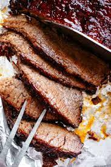

<h1>Brisket</h1>



<h2>Description</h2>

<p>This is a savory smoked brisket.</p>

<p>First by slowly smoking it, then letting it rest.</p>

<h2>Ingredients</h2>

<ul>
    <li>Brisket</li>
    <li>Spices</li>
    <li>Smoker</li>
</ul>

<h2>Steps</h2>

<ol>
    <li>Trim the brisket</li>
    <li>Season the brisket</li>
    <li>Smoke the brisket</li>
    <li>Let the brisket rest</li>
</ol>